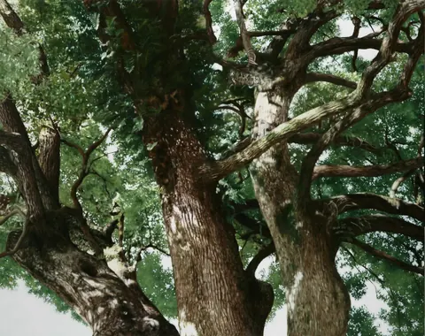

Zhi-Qing Liang


Seitlich wischen, ein Werk nach dem anderen
Sammlung
Werke in Sammlungen (Auswahl)
Eine Auswahl privater und institutioneller Sammlungen sowie öffentlicher Auktionsergebnisse, nach Werkserien geordnet.
 Gelbe Lilien-22012Privatsammlung (Kunsthandel)
Gelbe Lilien-22012Privatsammlung (Kunsthandel) Guang Bian Nr. 242017–2018Sammler aus der traditionellen Industrie
Guang Bian Nr. 242017–2018Sammler aus der traditionellen Industrie Ryukin Nr. 012023Sammler aus der traditionellen Industrie
Ryukin Nr. 012023Sammler aus der traditionellen Industrie Tausendjähriger Glanz-12012Privatsammlung (Grundstücksentwicklung)
Tausendjähriger Glanz-12012Privatsammlung (Grundstücksentwicklung)
Tausendjähriger Glanz-42012Privatsammlung (Grundstücksentwicklung) Duftlilien2011Privatsammlung (Rechtswesen)
Duftlilien2011Privatsammlung (Rechtswesen)
Sie sollten nicht auf mich neugierig sein, sondern auf sich selbst.Zhi-Qing Liang
Wo beginnen
 Wie lange ist es her, dass Sie eine Blume wirklich angesehen haben?Stilles Schauen
Wie lange ist es her, dass Sie eine Blume wirklich angesehen haben?Stilles Schauen Haben Sie das Licht heute bemerkt?Dünne (Licht)
Haben Sie das Licht heute bemerkt?Dünne (Licht) Was lässt Sie beim Gehen stehen bleiben?Im Gehen
Was lässt Sie beim Gehen stehen bleiben?Im Gehen Welche zwei Ichs wohnen zugleich in Ihnen?Pendeln
Welche zwei Ichs wohnen zugleich in Ihnen?Pendeln Wann müssen Sie sich am wenigsten verstellen?Wahrhaftigkeit
Wann müssen Sie sich am wenigsten verstellen?Wahrhaftigkeit
Sie müssen nicht antworten. Sie können auch alle Werke ansehen.
Im Atelier
Der Malprozess
Arbeit, Leben, Vorträge und Gespräche: mehrere Filmreihen auf einem YouTube-Kanal, von hier aus verlinkt.

Das Buch des Künstlers
《存有》
Nur wenige Maler schreiben selbst ein Buch. Seines wird hier gesondert vorgestellt: Umschlag, Inhalt und die Buchvorstellung.
Über hundert kurze Texte, ohne Metaphern, die direkt fragen, woher Begehren, Liebe und Wahrheit kommen.
Bei Eslite ansehen (chinesisch)
Buchvorstellung: Eslite Xinyi, Taipeh
Aktuelles
- 2024AusstellungAbiogenese – Aquarellausstellung und Vortrag
- 2024VorträgeÜber die Sache mit der Malerei (zwei Vorträge, Aquarellausstellung der Serie Abiogenese)
- 2024MeldungRti, „Yixiang Shenghuo Meixueguan“｜Der Künstler Zhi-Qing Liang spricht über Leben und Schaffen (Radio-Audio)
Ein Weg von dreißig Jahren
- 1991–1995Psyche und ErosPsyche & Eros21 Werke
- 1996–1998InnenansichtInterior Scene34 Werke
- 1999Zustand des HerzensState of Heart99 Werke
- 2000–2014Realismus (Zhi Xiang)Realism (Zhi Xiang)12 Werke
- 2007–2009Im GehenTake a Walk37 Werke
- 2010FließenFlowing20 Werke
- 2010Wolke, Berg, WasserCloud, Mountain, Water3 Werke
- 2011–2012Blume – Form und FarbeFlower — Form and Colour12 Werke
- 2012Tausendjähriger GlanzMillennial Splendour4 Werke
- 2017–2018Guang BianGuang Bian (Light Shift)34 Werke
- Seit 2023, laufendRyukinRyukin (working title)1 Werk
- 2024AbiogeneseAbiogenesis13 Werke
Drei Entfernungen
Nah｜Nur Bild
Auf jeder Werkseite „Nur Bild“ wählen: Die Oberfläche tritt zurück, nur das Gemälde bleibt.
Ausprobieren